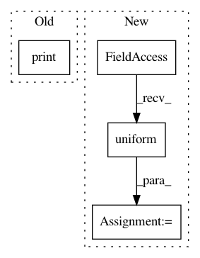

9773e810a527d88b97239e0117be0967a3b4214f,tests/auto/test_graph_model.py,TestGraph,test_2o_1i_sample_weights,#TestGraph#,133
Before Change
sample_weight={"output1": weights1, "output2": weights2})
loss = graph.evaluate({"input1": X_train, "output1": y_train, "output2": y2_train},
sample_weight={"output1": weights1, "output2": weights2})
print(loss)
def test_recursive(self):
print("test layer-like API")
After Change
weights1 = np.random.uniform(size=y_train.shape[0])
weights2 = np.random.uniform(size=y2_train.shape[0])
weights1_test = np.random.uniform(size=y_test.shape[0])
weights2_test = np.random.uniform(size=y2_test.shape[0])
graph.compile("rmsprop", {"output1": "mse", "output2": "mse"})
In pattern: SUPERPATTERN
Frequency: 3
Non-data size: 4
Instances
Project Name: keras-team/keras
Commit Name: 9773e810a527d88b97239e0117be0967a3b4214f
Time: 2015-08-26
Author: francois.chollet@gmail.com
File Name: tests/auto/test_graph_model.py
Class Name: TestGraph
Method Name: test_2o_1i_sample_weights
Project Name: dpressel/mead-baseline
Commit Name: ea62ff3f015ada77e171f34bd0aa885104cb8f4f
Time: 2018-10-07
Author: dpressel@gmail.com
File Name: python/baseline/w2v.py
Class Name: RandomInitVecModel
Method Name: __init__
Project Name: Microsoft/dowhy
Commit Name: 74e2e844ff7b4492c01e07828d3159d52eab7d19
Time: 2020-09-28
Author: amit_sharma@live.com
File Name: dowhy/datasets.py
Class Name:
Method Name: linear_dataset